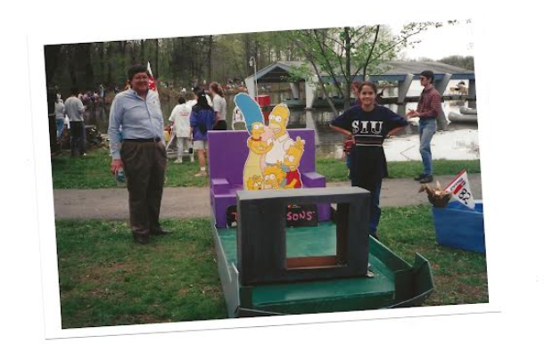
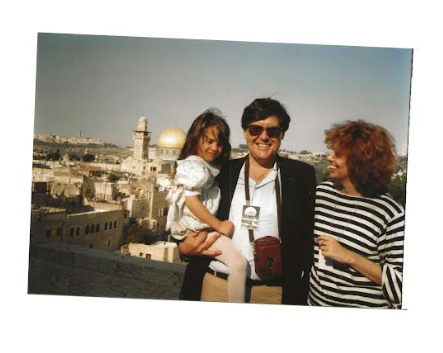
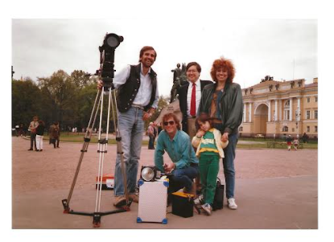
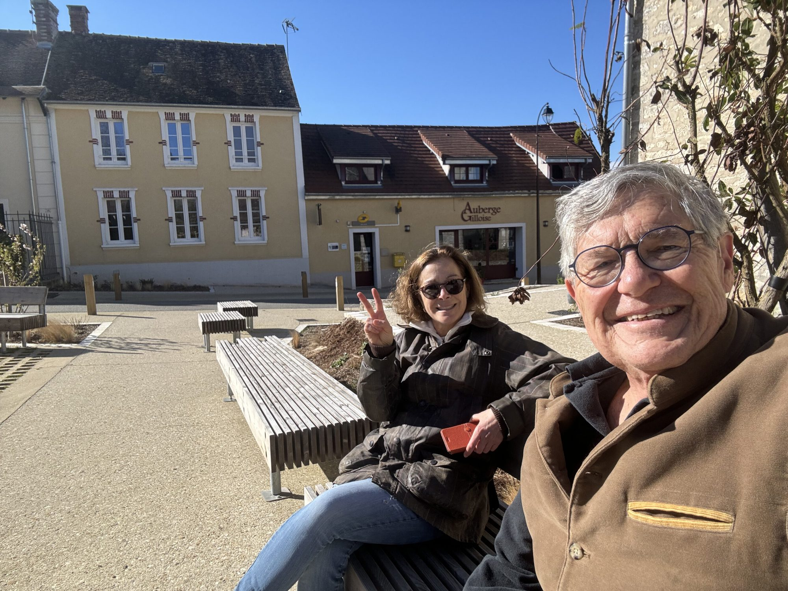

Television news journalist Jim Bittermann has lived and worked in Paris for more than 40 years, but still considers Chicago his “hometown.” Bittermann grew up in Waukegan, Illinois, and had his sights set on being a TV news reporter in Chicago, when fate intervened in 1978 and NBC News sent him abroad as a European correspondent. Since that time, he has served as an international correspondent for NBC, ABC, and CNN. Today, he serves as CNN’s senior international correspondent based in Paris, a place where I also live, part-time. I sat down with Jim to talk about his career, his life in Paris, and his long-lasting ties to Chicago. We met at the traditional all-day brasserie Annette on Boulevard Raspail, named in tribute to Annette Kolb, the inspirational French-German writer and pacifist who lived in the original Hotel Cayré, a favorite amongst guests and Parisians alike.

Rob Murphy: Jim, take us back to your childhood in Waukegan. I understand that you had a connection to the local newspaper, The Waukegan News Sun, at a very young age.
Jim Bittermann: I basically went from newspaper carrier boy to switchboard operator and then journalist at the Waukegan News Sun. While in college, I operated the switchboard on the night shift. One night a reporter called in and said, “Oh, I can’t cover this meeting I’m supposed to report on, would you mind just going out to this location, sitting in on the meeting and taking a few notes? Then type up your notes and leave them on my desk for the next morning?” And I said, “Sure, I don’t mind at all.” The next day when the newspaper came out, there it was on the front page, my story, with my name on it. That was it! After that, I was smitten and decided to change my major from electrical engineering and went on to graduate from Southern Illinois University (SIU) in Journalism.
Rob Murphy: It turns out we both went to Southern Illinois Carbondale and were actually there at the same time. I started off in aviation and became a pilot but switched to pre-med and ultimately transferred to Boston University in my “hometown”. I understand you continued working at newspapers every summer, but SIU also introduced you to TV and Film.

Jim Bittermann: I studied aviation at Carbondale as well! I learned how to be a pilot there too at the flying school based at Carbondale Airport. While, like you, I enjoyed flying, it was the journalism school that became my motivation. Back then, SIU had a very famous visiting professor in the design school named Buckminster Fuller. He was a great thinker of his time and invented the concept of the Geodesic Dome. He had given a series of lectures, about 11 hours long, which were filmed. I had a job at the university’s film production unit and was given the task of editing that and bringing it down to about a half hour. This engaged me with the visual aspect of people and places, and I don’t think I would have gotten into television if it hadn’t been for that experience.
Rob Murphy: I was in one of-those 11-hour lectures given by the famous Buckminster Fuller. I remember at one point leaving and going out to dinner, but returning for the finish. I can’t believe you condensed all of that to 30 minutes! After graduation your journalism career took you to Milwaukee. You also spent time working on the Edmund Muskie presidential primary campaign. Then you bounced around television markets in Ohio and ended up reporting for the Canadian Broadcasting Corporation. I understand your goal was to always get to Chicago and report for a major network. Tell me about that.
Jim Bittermann: My idea of the perfect job was to be the Chicago correspondent for NBC. I thought that would be fantastic. Flying around the Midwest in a Learjet, covering the strikes in Detroit, the floods in Iowa and these types of stories. As it ended up, it wasn’t to be because when I applied for a job at NBC, they only had three openings and all of them were overseas. They said, “We could put you in Johannesburg, Tokyo or Rome.” And I said, “Well, I don’t speak Italian, but I do eat Italian!” They gave me three months of Italian language training, and off I went to Rome. I arrived in Rome one month before the start of what became “the year of the three popes.” First, Pope Paul VI died, a new pope, John Paul I, was elected. He lasted 30 days and died. Then a very dynamic and non-Italian new Pope was elected, John Paul II. The upshot was that every time there was a papal transition, I was there and on the air in a big way. All the while I was supposedly coming back to Chicago, my parents lived there, and they were mystified at why I was not returning to the Chicago area.

Rob Murphy: It ends up there was something important keeping you in Europe besides your job.
Jim Bittermann: Yes, I struck up a relationship with my producer, another Chicagoan, Patricia Thompson. Pat grew up at 38th and Hamilton, Back-of-the Yards, on the south side. Her father happened to work for Commonwealth Edison, just like mine. She was one of the very first women reporters for WMAQ in Chicago but dreamed of moving to Paris. She did, becoming a producer. We met on the road. She was producing and I reporting. It seemed like a natural fit except she was living in Paris and didn’t want to move to Rome. But then, unexpectedly, the Paris correspondent, John Palmer, moved to New York to anchor the “Today” news. So, I told Pat, “Well, I’ll move to Paris!” Eventually we got married and had a child. For next 30 years we worked together everywhere from Europe to Africa to the Middle East and Asia. She as producer and me as correspondent, but every year we would go back to Chicago to visit our folks.
Rob Murphy: You mentioned your daughter, Tess, who was born and raised in Paris, but is a graduate of Northwestern University. Tell me about raising a child in Paris and her decision to go to school at Northwestern, another Chicago tie.

Jim Bittermann: She was born and raised in Paris and went to the local neighborhood French school. As a young girl she didn’t speak any French as we spoke English at home. She just basically learned French at school and that turned out to be the best way for a child to become totally bilingual. At one point when she was about 10 or 11, she refused to speak English! But as she grew older, she insisted she was American and wanted to go to the United States for university. She ended up at Northwestern as an undergraduate, then went on to medical School at Drexel University in Philadelphia, which, of course, was all fine with us! She is now a gastroenterologist and liver transplant specialist at the University of Pennsylvania Hospital.
Rob Murphy: From your homebase in Paris, you’ve traveled the world covering major news stories. Which are most memorable?
Jim Bittermann: Even though I was a Protestant, I got to cover the Catholic Church at an unbelievably high level, traveling along with Pope John Paul II for about a quarter of his 110 overseas trips. That was a wonderful experience. There were also big stories that were tragedies. I covered the Sudan famine and won an Emmy for that. It was a terrible story, and we saw unbelievable things, such as visiting a hunger camp with 100 people dying per day, most of them children. I covered the Middle East for a long time. What’s happening now in Israel and Gaza, I saw the genesis of that back in the 70s and 80s. I watched the Berlin Wall come down. I also covered many wars, revolutions, earthquakes, things of that nature that came along. But also, I covered some fun things, the Bolshoi Ballet, the opera in Paris, I once spent a summer traveling with Gypsies across Europe and following young bullfighters in Spain.
Rob Murphy: Your late wife, Pat, passed away in 2010, I’m very sorry about that. In 2017, you married another American living in Paris, Mary Jean Lowe. How did you two meet?
Jim Bittermann: My late wife, who I’d been with every day, constantly, for 30 years, suddenly disappeared because of a brain aneurysm. She collapsed while we were watching TV one night and within two or three minutes slipped into a coma, never to regain consciousness. I saw among my friends who had lost their partners that there always seemed to be two paths to go. One is that you decide that this is it, you’re going to live alone for the rest of your life, and the other is to find somebody. I was lucky to meet Mary Jean, another American transplant in Paris, at a cocktail party. She had been in France for 16 years and I’ve been here seemingly forever, but we had never run into each other, even though the American community in Paris is fairly tightknit. One night, about two years after Pat died, I was introduced to her by a mutual friend. Again, it seemed like a perfect fit. She was recently divorced and like me was interested in politics, travel, and art. What’s more as a former diplomat she spoke better French, Italian and Spanish than I could ever dream of. Mary Jean has two children who are now my stepchildren, and it is wonderful. Now we have three grandchildren between my daughter and her son and daughter. Every December, we all get together somewhere sunny and warm!

Rob Murphy: You split time between Paris and your property near Normandy. I understand you’ve become quite the French gardener. There’s a rumor that in 2009 you grew the 13th largest pumpkin in France!
Jim Bittermann: It’s true. And you know what? I’m going to give you a breaking news update. This year I finally succeeded in growing yet another large pumpkin, but this time it was only the 17th largest in France. But now the next question you should ask, Rob, is how many entrants in the contest were there?
Rob Murphy: Let me guess, 17?
Jim Bittermann: Yep! I was dead last. But it was great fun.
Rob Murphy: I understand that this pumpkin growing skill of yours actually inspired you to write a children’s book.
Jim Bittermann: That is true. Izzy & The Giant Pumpkin is a book I wrote for my granddaughter because she was intrigued by this great pumpkin that was growing in the backyard in Normandy and the trouble I had growing it. I figured that could be the subject for a children’s book. So, with the help of my stepdaughter, who did the illustrations, we told the somewhat true story of how my granddaughter, Izzy, discovered why the pumpkin wasn’t growing. It’s available on Amazon, by the way!
Rob Murphy: Along with gardening and writing books, your work outside of TV news has been very rich in Paris. You are a member of the jury for the TV News Emmy awards. You’ve taught courses in global communications at the American University of Paris, which is in our neighborhood, the 7th arrondissement. You’re involved in the Comité Paris-Chicago. I recently saw you and your writer colleague Tim Ryback discuss his new book, How Hitler Came to Power at the American Library in Paris. Tell me more about your life as an American in Paris today.
Jim Bittermann: When some Americans come to live in Paris, they don’t interact much with the French which is a bad idea. One of the things that adds to the richness of the experience is trying to engage with the culture as much as possible. So, I have a lot of French friends in Paris and in our village in Normandy. But another really amazing thing about being American transplants in France is that we get to see people coming through who we would never have contact with in the United States. CEOs, politicians and rock stars who rarely come down from their ivory towers in the U.S., but who, when on vacation in a strange land, don’t know the good restaurants, the places to see, don’t speak the language, and who just might end up in your living room. I always have a bottle of champagne ready, just in case somebody shows up.
Rob Murphy: I believe it is mandated in French culture to have a bottle of champagne ready 24/7. One of my favorite questions I ask Americans in Paris, is what three things do you advise your American friends to do while they are visiting Paris?
Jim Bittermann: The number one on my list is Musee d’Orsay, a wonderful, wonderful former train station, stunningly renovated as a museum which houses not only artwork, but sculptures, photography and furnishings from the middle of the 19th century until the middle of the 20th century. Another one on my to-do list sounds a bit corny but it’s taking a ride on one on of “les Bateaux Mouche”, the famous river cruise boats that plow the Seine. Lastly, and maybe the most important, is to just aimlessly walk the streets of Paris; it’s inspirational. The history and the beauty of the architecture, gardens and surroundings in general is such that you just can’t help but be inspired and uplifted even on the grayest, or coldest of days. And don’t forget, there are also 8,000 restaurants with terraces to visit. There’s also a real sense of neighborhood in Paris and a real sense of pride about the city, much like in Chicago. It’s really a privilege to live here.
Rob Murphy: You mention Chicago again, what is it about Chicago that interests you after all these years living in Paris and being an international citizen?
Jim Bittermann: One of the things about growing up in the Midwest, and the Chicago area in particular, is that it gives you this notion of possibility. It may be the flatlands of Illinois, but there’s nothing on the horizon to block your vision of what’s out there. You’re encouraged to push the limits, think outside the box. I’m not so sure that you find other places like that in the United States. The Midwest is particularly conducive of that, and of course Chicago being the biggest city in the Midwest, is a great engine for it. As a reporter, that spirit of living without boundaries is great to have because you can then ask a lot of questions and develop stories which others, who perhaps might be a little bit more jaded, would not. Even though my family now has disappeared from the Chicago area in one way or another, I still feel like a Chicagoan. Chicago sticks with you.
Rob Murphy: Thank you, Jim, it’s been a great pleasure spending some time together with you. See you around the neighborhood!
Dr. Rob Murphy is Professor and Executive Director of the Havey Institute for Global Health at Northwestern University. You may have seen him on WGN-TV morning news or WTTW, where he reports on COVID-19 and other public health issues. While he calls Chicago home, Rob also spends time in Paris, where he has lived on and off for the past 20 years including full time as visiting professor at the Pierre et Marie Curie University. He has met many other Chicagoans who are living and working in the city. Rob will introduce us to some of these Chicagoans in Paris who are embracing a new culture and lifestyle in the City of Lights.